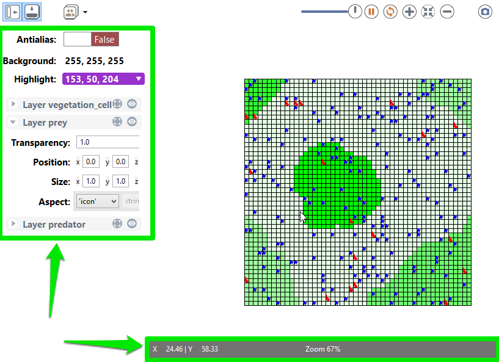

GAMA allows modelers to define several and several kinds of displays in a GUI experiment:
These 2 kinds of display allows the modeler to display the same objects (agents, charts, texts …). The OpenGL display offers extended features in particular in terms of 3D visualisation. The OpenGL displays offers in addition better performance when zooming in and out.
The classical displays displaying any kind of content can be manipulated via the mouse (if no mouse event has been defined):
Each display provides several buttons to manipulate the display (from left to right):
snapshots folder of the models folder.The Show/Hide side bar button opens a side panel in the display allowing the modeler to configure:
The bottom overlay bar displays information about the way it is displayed:

The OpenGL display has an additional button 3D Options providing 3D features:

In addition, the bottom overlay bar provides the Camera position in 3D.
| Key | Function |
|---|---|
| Double Click | Zoom Fit |
| + | Zoom In |
| - | Zoom Out |
| Up | Move forward |
| Down | Move backward |
| Left | Strafe left |
| Right | Strafe right |
| SHIFT+Up | Look up |
| SHIFT+Down | Look down |
| SHIFT+Left | Look left |
| SHIFT+Right | Look right |
| MOUSE | Makes the camera look up, down, left and right |
| MouseWheel | Zoom-in/out to the current target (center of the screen) |
| Key | Function |
|---|---|
| Double Click | Zoom Fit |
| + | Zoom In |
| - | Zoom Out |
| Up | Horizontal movement to the top |
| Down | Horizontal movement to the bottom |
| Left | Horizontal movement to the left |
| Right | Horizontal movement to the right |
| SHIFT+Up | Rotate the model up (decrease the phi angle of the spherical coordinates) |
| SHIFT+Down | Rotate the model down (increase the phi angle of the spherical coordinates) |
| SHIFT+Left | Rotate the model left (increase the theta angle of the spherical coordinates) |
| SHIFT+Right | Rotate the model right (decrease the theta angle of the spherical coordinates) |
| SPACE | Reset the pivot to the center of the envelope |
| KEYPAD 2,4,6,8 | Quick rotation (increase/decrease phi/theta by 30°) |
| CMD+MOUSE1 | Makes the camera rotate around the model |
| ALT+LEFT_MOUSE | Enables ROI Agent Selection |
| SHIFT+LEFT_MOUSE | Enables ROI Zoom |
| SCROLL | Zoom-in/out to the current target (center of the sphere) |
| WHEEL CLICK | Reset the pivot to the center of the envelope |